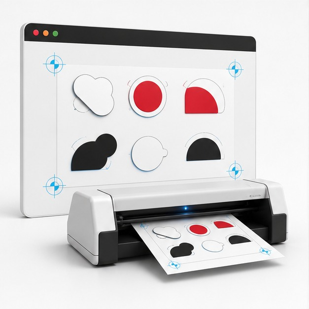

ลดงานซ้ำก่อนพิมพ์
ตั้งค่ารูปแบบ mark และ label แล้วใช้ซ้ำกับงานหลายขนาดได้
ECUT PrintMark
สร้าง mark, bleed, label และเลเยอร์ที่ใช้ซ้ำได้ ช่วยให้ทีมพิมพ์และทีมตัดอ่านไฟล์เดียวกันชัดเจนขึ้น

ตั้งค่ารูปแบบ mark และ label แล้วใช้ซ้ำกับงานหลายขนาดได้
เลเยอร์ชัด สีเส้นตัดถูกต้อง ลดเวลาถามกลับระหว่างฝ่าย
ทำงานกับงาน die-cut, kiss-cut และ sheet layout สำหรับพิมพ์หลายชิ้น
Single License
จ่ายครั้งเดียว ใช้งานได้ตลอด สำหรับ 1 เครื่อง